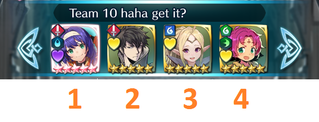
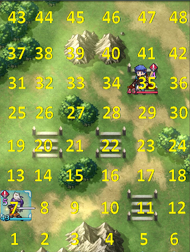
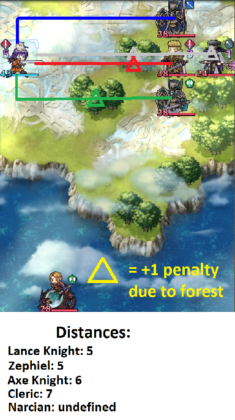
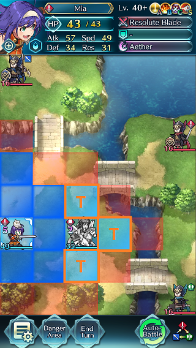
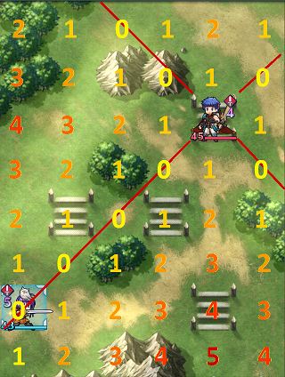
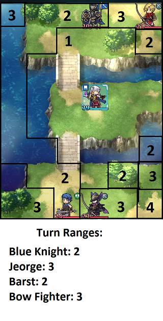

Glossary
This glossary is designed to be a supplement to the text guide. Many concepts are explained in further detail, sometimes with images or gifs. However, this glossary is not intended to be a comprehensive resource to capture all behaviors; please see the text guide for the comprehensive resource for all FEH AI behaviors.
Charts
1. Important Concepts
a. Slot Order
Slot order is the final tiebreaker for most situations where the AI must choose between multiple units. The only exception is for Offensive Movement Assists, where the tile on which the potential targets are standing are examined instead. Slot order is numbered from lowest to highest going from left to right on your team.

In the context of the tiebreaker, lower slot number will give units the edge in movement and assist priority. Higher slot number will give the unit more priority in being targeted by both allies and enemies, and also give it the edge in attack priority.
Enemies also have a slot order, based on the map. There is no way to tell their slot number at a glance, although in arena the enemy's deployment mirrors the player's. However, a general pattern is that Heroes have lower slot number than generic enemies in a given map. There are exceptions, of course. If you want enemy slot order info for each map, visit the FEH Wiki and search the specific map for which you info.
Reinforcements will always have a later slot number than units currently deployed. A unit that dies does not have its slot replaced; reinforcements will always use the last unoccupied slot. For instance, if there are 4 starting enemy units and a reinforcement appears on Turn 2, that reinforcement will be in the 5th slot.
If there are multiple reinforcements that would be deployed in the same turn, if they share same trigger (for example, two reinforcements that appear on Turn 2, or two reinforcements from killing Legion), then they will have a pre-determined arbitrary slot order based on the map. If they do not share the same trigger (for example, one reinforcement comes from killing a red mage, while another comes from killing a blue mage), then their slot order depends on their respective deploy mechanisms. If two reinforcements result from two different kill triggers like in the previous example, then their slot order is respective to the slot order of their kill trigger targets. If two reinforcements result from a kill trigger and a turn-based trigger, then the reinforcement resulting from the kill trigger will take precedence over the turn-based one for slot order.
b. Tile Priority
Tile priority is the final tiebreaker for all situations where the AI must choose between multiple tiles. Tile priority is numbered from lowest to highest starting from the bottom left corner tile of the map, going right, and wrapping back up each row. Thus the highest priority tile is at the top right corner of the map.

An easier way to visualize the priority relation between tiles is to remember the hierarchy of: Up > Right > Left > Down. A tile that is in a higher row than another always has priority. Between tiles in the same row, the one on the right always has priority.
c. Calculating Distance
Calculating distance is a function that is performed for various tiebreakers, which determines the distance from unit/tile A to unit/tile B. Distance calculation is a one-way calculation, meaning the distance from A to B is not necessarily the same as the distance from B to A. This is because distance uses the movement type of the unit related to A and factors in terrain that may hinder that movement type.
When calculating distance in this guide, it is actually saying to calculate the shortest distance. So when calculating distance from A to B, find the shortest path from A to B. When constructing these paths, forests are worth 2 tiles for infantry, while trenches are worth 3 tiles for cavalry. Untraversable tiles for unit A's movement type cannot be used in the path. The distance includes the tile that B occupies. This means that it is possible for there to be no path at all if B is on a tile that is unpathable for unit A. In that case, the distance is considered "undefined." All distances that are "undefined" are considered equal for the purpose of tiebreakers. Example of distance calculation from Mia to various enemies:

d. Movement Order List
The movement order list is, importantly, the only calculation that is preserved throughout the course of a turn. Whenever an action is performed, every step is repeated from the beginning with the exception of the movement order list that is created first. Since position and distance is an important tiebreaker in the movement order list, the fact that it persists across the turn means that any change in position due to refreshes or player induced repositioning assists, or any change in distance to enemies due to movement B slot skills (i.e. Lunge) or simply due to enemies dying, all of that will have no effect on the movement order across the turn.
Something to note is that the movement order list is created during the first iteration of deciding an action. For the enemy AI it's synonymous to being created at the very beginning of the turn. However, for players, it is created during the first action that the player lets the AI autobattle. If the player manually performs an action, then turns on autobattle, the movement order list will be created in the context of the state of the board after that player-performed action. This means that even if the player manually performs the same exact action the AI would have performed, the movement order list could be created under a completely different context and cause the AI to behave differently than if it was turned on at the start of the turn. If the first action was performed with autobattle, then the player performs the second move, then lets autobattle take over again, the subsequent autobattle will still use the movement order list generated from the first action.
2. Special Actions and States
a. Offensive Movement Assist
Offensive movement assist is a special usage of movement assists only available during pre-combat, only involving Shove, Smite, Draw Back, and Reposition at the moment. Normally, movement assists are used defensively to help put an ally into less danger. However, for the offensive movement assist mode, it seeks to move an ally out of the way to make room for another ally to attack an enemy that is supposedly blocked from being attacked. This mode of behavior is rare to see, as there are many requirements for it to occur.

b. Bodyblocking
Bodyblocking is a special mode of defensive movement assist. It looks like regular movement, since when bodyblocking, the bodyblocker never actually uses its assist. However, the bodyblocker must have a defensive assist skill equipped and be able to use that assist on the target; the action of bodyblocking simply overrides the assist usage when applicable. They also perform the action in the same phase as regular defensive assist behavior, as opposed to performing it when standard movement is performed.

The purpose of bodyblocking is to reduce enemy threat to an ally by blocking at least 1 enemy melee unit's path to that ally. It can almost be thought of as a more offensive version of Swap.
c. Block Breaking
Block breaking is a special mode of movement behavior. The unit performs an attack on a breakable block, but it occurs in the same phase as standard movement. First, a unit determines its optimal movement tile. Then, all blocks that are closer to the enemy than that tile are eligible to be broken; of course, the unit must be able to actually attack those blocks as well. All blocks then have their attack positions calculated. If there is more than one block, the best one to break is chosen based on proximity to the optimal movement tile, followed by safety and then tile priority of the blocks. Breaking a block will override moving to the optimal movement tile if there is at least one eligible block. If no blocks were eligible to be broken in the first place, then the unit will decide if it wants to use Pivot if it has it (or Rally in very edge circumstances), otherwise they will move as usual.
d. Shuffling
Shuffling is a special state which affects movement behavior. A unit can only gain the shuffle status in specific conditions. The first condition is if a unit's best move is to stay in their current position. The second condition depends on the unit's weapon as follows: if the unit has a ranged weapon and they are within 2 spaces of an enemy or are adjacent to a breakable block, then they will get the shuffle status. If the unit has no weapon equipped and they are are within 2 spaces of an enemy AND are adjacent to an ally, then they will get the shuffle status. A unit with a melee weapon equipped will never gain the shuffle status. If a unit gains the shuffle status, staying still becomes the lowest priority move, and will thus attempt to move if possible.

The primary purpose of this mechanism is to reduce the chance that the unit may be blocking another unit from attacking. This behavior is more likely to be seen in weaponless units, as they are much more likely to be content by standing still.
e. Pass
Pass is a status granted by certain skills, which at the moment only include Pass and Fujin Yumi (unrefined). Units affected by this status calculate their threat ranges differently than usual, and additionally do not store their movement range values at the beginning of the turn as other units do. Instead, they "snapshot" the tiles occupied by enemies, and their threat is calculated by using their movement range at the moment of calculation while disqualifying those snapshotted tiles as illegal to move on. The list of snapshotted tiles is referred to as the Obstacle List in the guide.
The Obstacle Lists created at the beginning of the turn will not change unless a enemy unit's location changes as a result of combat (including unit with pass itself), be it by an enemy unit dying or they are affected by lunge or drag back. This means that even if an allied units' locations change due to movement or using assists or dying, obstacle positions are not updated. In the event that an enemy unit's location changes as a result of combat, each tile on both Obstacle Location List is checked to see if an enemy or ally still exists on it, respective to whose list it is. Any tile which no longer has an enemy or ally on it is removed from the list. Furthermore, each unit with a Pass skill is checked to see if they still meet the HP requirement. If they no longer meet it, they lose the Pass status. The opposite is true as well; if a unit did not have the pass status before but now meet the HP requirement, they gain the Pass status.
3. Positioning Tiebreakers
a. Bodyblocking
A tile on which a blocker can perform bodyblocking will have priority over others. This is because despite not actually using an assist and only using movement, bodyblocking has the same priority level as a defensive movement assist.
b. Distance
Distance as a positioning tiebreaker is only relevant for standard movement behavior. Units will prefer to move to the tile that is lowest distance from their chase target.
c. Defense Tiles
Assuming all else is equal, defense tiles have priority over tiles without defense tiles when choosing position.
d. Enemy Threat
Assuming all else is equal, a tile with less enemy threat has priority over other tiles with more enemy threat. A tile is considered threatened by an enemy if it is in range of the combination of an enemy's movement+attack ranges. It is expressed this way because movement range is stored at the beginning of the turn, so if movement range were to change in the middle of the turn (e.g. Gravity staff), it would still calculate using the movement range stored at the beginning of the turn. It is also expressed this way because terrain movement limitations like walls, trees, and breakable blocks do affect which tiles can be threatened by an enemy, but transient limitations like other units blocking certain tiles, or tiles blocked by obstruct have no affect. To a similar effect, enemy threat also does not seem to consider tiles that can only be threatened through a teleportation skill, because those tiles are not within the movement+attack range combination.
e. Teleportation
Assuming all else is equal, a tile that requires a teleportation to reach has priority over tiles that can be reached with standard movement. In game, these tiles are visually denoted as a lighter shade of blue when you are manually making a move. If a tile could be reached by both teleportation and by using Pivot, it is still considered a tile that requires teleportation, and Pivot will not be used if that tile is selected.

This is a table of sources of teleportation:
| Weapons: |
|
||||||||
|---|---|---|---|---|---|---|---|---|---|
| Passives: |
|
||||||||
| Other |
|
f. Diagonal
This tiebreaker only exists for standard movement. Assuming all else is equal, a tile that is closer to any diagonal to the chase target has priority over other tiles. Being directly diagonal from the target has the highest priority. Distance from the diagonal is measured in absolute number of spaces away, so movement type and obstacles are not factored in. 
g. Terrain
Assuming all else is equal, a tile with more prohibitive terrain has priority over other tiles. The hierarchy of special terrains is: flier terrain > forest > trench > regular. Flier terrain is any terrain that can only be accessed by flying units, whether it be water, mountains, lava, abyss, etc. Forests hinder infantry and prohibit cavalry, so they are next. Trenches only hinder cavalry, so they are the least prohibitive special terrain. Regular tiles have the least priority, of course.
h. Movement
Assuming all else is equal, a tile that requires the lowest amount of movement to reach has priority over other tiles. The only time this is not true is for standard movement if the unit has the "shuffle" status.
i. Tile Priority
Assuming all else is equal, a tile with the highest tile priority number has priority over other tiles. More about tile priority can be read in Section 1b.
4. Targeting Tiebreakers
a. Combat Result
This tiebreaker only exists for attack evaluation. Assuming all else is equal, the target that results in the best combat has priority over other targets. The three different results for combat are win, draw, and loss, whose priority is in that order. Any win is better than any draw, and any draw is better than any loss. If a unit defeats their opponent in a round of combat, the result is win. If neither unit is defeated, it is considered a draw. If a unit would be defeated by their opponent, it is a loss. This tiebreaker does not exist in Rival Domains or Grand Conquest, perhaps because of infinite unit spawning requiring less conservative play that usually results from this tiebreaker.
b. Debuffs Enemy
This tiebreaker only exists for attack evaluation. Assuming all else is equal, a target that can be debuffed by at least 2 uncombined points of def or res by a skill in Chart F has priority over other units. This means for example that if the attacker could inflict -7 def with Seal Def 3, and target 1 has no debuffs while target 2 already has a -6 def debuff, then target 1 will have priority. It doesn't matter how much def or res would be debuffed, so long as the amount reaches the threshold of 2 and the appropriate skill is equipped. Having multiple applicable skills from the chart does not increase priority.
c. Damage Ratio
This tiebreaker only exists for attack evaluation. Assuming all else is equal, a target that results in a better damage ratio for the attacker has priority over other targets. Damage ratio is calculated with the following formula:
[Net Damage Dealt]*3 - [Net Damage Taken]
Net damage is the change in health; that is, the difference between the health at which the unit starts combat and ends combat. If you do more damage to a unit than it has health, only the amount of health lost will be considered net damage. This also accounts for healing that may occur mid combat due to Absorb staff or certain specials. Being dealt 10 damage, but healing 10 health from Aether afterward, would be 0 net damage. Do note that heal only counts for actual HP restored; for example if Ike has 45/45 HP, is dealt 0 damage, then activates Aether, he will not heal. As such, his net damage taken is 0.
This formula basically values dealing damage at 3 times the rate at which damage is being taken. So dealing 9 damage and taking 27 damage has the same exact value as dealing 0 damage while taking 0 damage. In the same vein, causing the target to heal makes that target a much lower priority. Causing the enemy to heal 10 HP (-10 net damage) has the same value as doing 0 damage and taking 30 damage.
AoE specials (e.g. Growing Wind) are accounted for in this formula by adding the damage dealt to the main target. Any collateral damage dealt to other targets has no bearing in the formula.
d. Increasing Special Charge
This tiebreaker only exists for attack evaluation. Assuming all else is equal, the target whose special charge would be increased by the end of combat has priority over other targets. At the moment this always requires expending the enemy's special activation, whether it is an offensive special or a defensive one. Simply having it activate is not enough, as the charge must be higher than it was before combat. For instance, if Lukas has 0 CD on Sacred Cowl with Killer Lance before combat and is attacked twice by a bow, it will activate then go back down to 0 CD, thus resulting in no increase to the charge and not being eligible for this tiebreaker. The amount the special charge is increased doesn't matter, so long as it is increased at all.
e. Threatens Enemy
This tiebreaker only exists for assist evaluation. Assuming all else is equal, the target who has the "threatens enemy" status has priority over other targets. In order to have the "threatens enemy" status, a weapon must be equipped.
f. Amount of stats buffed
This tiebreaker only exists for rally assist evaluation. Assuming all else is equal, the target who receives a higher amount of stat buffs from a rally has priority over other targets. For example, a target 1 has a +2 defense buff while target 2 has no buffs. If the rallier has Rally Def, then target 2 would receive +4 def from the rally, while target 1 would only receive +2, thus target 2 has higher priority. For Harsh Command, the amount of debuff that is removed is added to the amount of buff given. For example, if a unit has a -7 def debuff and a +6 def buff, Harsh Command would give that unit 8 points of stat buffs for the purpose of this tiebreaker.
g. Amount Healed
This tiebreaker only exists for heal assist evaluation. Assuming all else is equal, the target who receives a bigger heal has priority over other targets. The most likely scenario for this tiebreaker to matter is when at least one target is not missing enough HP to receive the full effect of a heal. Another situation is when involving the Rehabilitate staff.
h. Visible Stat Total
This tiebreaker only exists for assist evaluation. Assuming all else is equal, the target who has a greater visible stat total has priority over other targets. Visible stat total is the combination of atk, spd, def, and res, and does NOT include HP. Visible stat total includes stats granted by passives and factors in buffs and debuffs, but does not account for in-combat boosts such as Brazen Atk/Def or Ward Armors.
i. Distance
This tiebreaker only exists for rally assist evaluation. Assuming all else is equal, the target who is closer to the nearest enemy has priority over other targets.
j. Chase Priority
This tiebreaker only exists for movement evaluation. Chase priority number is determined through the following formula:
[Potential Damage Dealt] - 5 * [Turn Range]
Potential damage dealt means the total amount of damage that can be dealt to a target, including damage that exceeds the target's HP. It also includes doubles, even a double that would normally would not occur due to the first hit killing. All in-combat passives carried by the unit and target affect this number, such as Darting Blow or Steady Breath, while in-combat effects from other units such as Spurs and Drives do not have any effect, with the exception of ally support (don't ask me why). Skills that grant in combat bonuses based on number of nearby enemies or allies, such as Flame Siegmund, Swift Mulagir, Laws of Sacae, and Wolf Berg, seem to always have their bonus active when calculating target or being assessed as a target. Skills that affect doubles such as breaker skills or Windsweep will affect doubles for calculating this number. Special activations are not taken into consideration; neither offensive nor defensive. Damage taken by the unit is also not taken into account, purely the potential damage dealt. This means whether the target could counterattack or not has no bearing on this formula.
Turn range is similar to distance calculation, but with several key differences. The main aspect of turn range is that it measures the amount of turns it takes for the unit to reach the target, which scales with the movement range of the unit. For instance, a target 6 tiles away from a melee infantry unit would have a 3 turn range. If the unit was a cavalier, then that would be a 2 turn range, while for an armor it would be a 6 turn range. Effects that alter movement range such as Armor March and Gravity do effect movement range for this calculation. Unlike for distance calculation, turn range will ignore special terrain that the target is standing on.
Units with pass status calculate chase target somewhat differently. Normal units can legally target any enemy that can be attacked from a tile that can be pathed to. Pass is similar, but tiles in the Obstacle List are invalid tiles to attack from (they do not affect pathing, however). That means an enemy who is fully surrounded by unpathable obstacles and enemies cannot be chase targeted by a melee unit with the pass status. Same deal for ranged, there must be a tile that can be pathed to from which the unit can attack the enemy in order to chase it.
Distance for melee units with pass is calculated as expected; however, turn range for units with pass is always calculated with movement range value of 1, no matter what their actual movement range is.
Ranged units calculate slightly differently than melee units in that they subtract 1 from the number of tiles away and get to also ignore special terrain adjacent to their target. For instance, a target 5 tiles away from a ranged infantry unit would have a 2 turn range, since 5-1=4, and 4/[2 movement range] is 2 turn range. Even if there was a mountain in front of the target, the turn range would be calculated for ranged units in this manner. Do note that while targeting can ignore adjacent terrain for ranged units, they will still move along the traversable path toward the unit.

Overall what this formula shows is that for each turn farther a target is, it needs to take 5 more damage to maintain equal value.
k. Terrain
This tiebreaker only exists for offensive movement assist evaluation. Assuming all else is equal, the target who is standing on a more prohibitive special terrain will have priority over other targets. As a reminder, the special terrain hierarchy is: Flier Terrain > Forest > Trench > Regular.
l. Tile Priority
This tiebreaker only exists for offensive movement assist evaluation. Assuming all else is equal, the target who is standing on the tile with higher priority will have priority over other targets. See Section 1b for more details on tile priority.
m. Slot Order
Assuming all else is equal, the target who has a higher slot number will have priority over other targets. See Section 1a for more details on slot order.
5. Action Priority Tiebreakers
a. Combat Result
This tiebreaker only exists for attack evaluation. Assuming all else is equal, the attacker with the best combat result will have priority over other attackers. The three different results for combat are win, draw, and loss, whose priority is in that order. Any win is better than any draw, and any draw is better than any loss.
b. Debuffs Enemy
This tiebreaker only exists for attack evaluation. Assuming all else is equal, the attacker with the "debuffer" status who will debuff its target by at least 2 uncombined points of def or res will have priority over other attackers.
c. Afflicts Enemies
This tiebreaker only exists for attack evaluation. Assuming all else is equal, the attacker with the "afflicter" status will have priority over other attackers. See Chart G for a list of miscellaneous debuff skills that give the "afflicter" status. It doesn't matter how many of these skills are equipped or how potent they are, only that the attacker his it.
This tiebreaker does not apply if the attacker's only source of Afflict is Poison Strike and also only has loss combat results.
d. Damage Ratio
This tiebreaker only exists for attack evaluation. Assuming all else is equal, an attacker that has a better damage ratio against its target has priority over other attackers. Damage ratio is calculated with the following formula:
[Net Damage Dealt]*3 - [Net Damage Taken]
Net damage is health at which the unit starts combat minus the health at which the unit ends combat. This accounts for healing that may occur mid combat due to Absorb staff or certain specials. Being dealt 10 damage, but healing 10 health from Aether afterward, would be 0 net damage. Do note that heal only counts for actual HP resotred; for example if Ike has 45/45 HP, is dealt 0 damage, then activates Aether, he will not heal. As such, his net damage taken is 0.
This formula basically values dealing damage at 3 times the rate at which damage is being taken. So dealing 9 damage and taking 27 damage has the same exact value as dealing 0 damage while taking 0 damage. In the same vein, causing the target to heal makes that target a much lower priority. Causing the enemy to heal 10 HP (-10 net damage) has the same value as doing 0 damage and taking 30 damage.
e. Movement Range
This tiebreaker only exists for attack evaluation. Assuming all else is equal, an attacker with greater movement range will have priority over other attackers. This means that cavalry will have priority over infantry and fliers, who have priority over armors. Note that effects that alter movement range such as Armor March and Gravity will be considered for movement range in this tiebreaker.
f. Increasing Special Charge
This tiebreaker only exists for attack evaluation. Assuming all else is equal, the attacker who would increase its target's special charge by the end of combat has priority over other attackers. At the moment this always requires expending the enemy's special activation, whether it is an offensive special or a defensive one. Simply having it activate is not enough, as the charge must be higher than it was before combat. For instance, if Lukas has 0 CD on Sacred Cowl with Killer Lance before combat and is attacked twice by a bow, it will activate then go back down to 0 CD, thus resulting in no increase to the charge and not being eligible for this tiebreaker. The amount the special charge is increased doesn't matter, so long as it is increased at all.
g. Weapon vs Weaponless
This tiebreaker only exists for assist evaluation and movement order list creation. For pre-combat assists, the assister with no weapon will always have priority over other assisters with weapons. For post-combat assists, assist type has priority over whether weapon is equipped.
For movement list creation, assuming all else is equal, a unit with a weapon will perform standard movement before a unit without a weapon.
h. Distance
This tiebreaker only exists for assist evaluation. Assuming all else is equal, the assister who is farthest from its closest enemy has priority over other attackers. See Section 1c for more information on calculating distance.
i. Non-Movement Assist Type
This tiebreaker only exists for non-movement assist evaluation. For pre-combat assists, assuming all else is equal, Refresh > Restore = Heal = Donor Heal = Rally. For post-combat assists, it is always the case that Refresh > Restore = Heal > Donor Heal = Rally > Defensive Movement Assist.
j. Assist vs Assistless
This tiebreaker only exists for movement order list creation. A unit with no assist will always perform standard movement before a unit with an assist.
k. Melee vs Ranged
This tiebreaker only exists for movement order list creation. A unit with a melee attack will always perform standard movement before a unit with a ranged attack. A unit with no weapon will perform standard movement after both melee and ranged attacks.
l. Slot Order
Assuming all else is equal, the attacker who has a higher slot number will have priority over other attacker. See Section 1a for more details on slot order.